In a wide range of organisms, excess glucose is converted into polymeric forms for storage and transport. The principal storage forms of glucose are glycogen in vertebrates and many microorganisms, and starch in plants. In vertebrates, glucose itself is generally transported in the blood, but the transport form in plants is sucrose, or its galactosylated derivatives.
Although the intermediates in glycolysis and gluconeogenesis are sugar phosphates, many of the reactions in which hexoses are transformed or polymerized involve a different type of activating group, a nucleotide bound to the anomeric hydroxyl of the sugar through a phosphate ester linkage. Sugar nucleotides are the substrates for polymerization into disaccharides, glycogen, starch, cellulose, and more complex extracellular polysaccharides. They are also key intermediates in the production of aminohexoses and deoxyhexoses found in some of these polysaccharides. The role of sugar nucleotides (specifically UDP-glucose) in the biosynthesis of glycogen and many other carbohydrate derivatives was discovered by Luis Leloir.
| The suitability of sugar nucleotides for
biosynthetic reactions stems from several properties: 1.
Their formation by the condensation of a nucleoside
triphosphate with a hexose phosphate splits one
high-energy bond and releases PPi, which is further
hydrolyzed by inorganic pyrophosphatase; there is a net
cleavage of two high-energy bonds (Fig. 19-11). The
resulting large, negative, free-energy change drives the
synthetic reaction and reflects a strategy common to many
biological polymerization reactions. 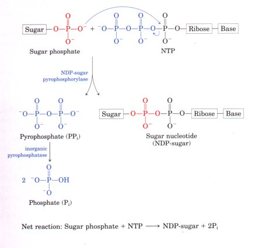 |
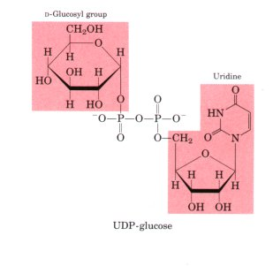 Figure 19-11 Formation of a sugar nucleotide by condensation of a nucleoside triphosphate (NTP) with a sugar phosphate. The negatively charged oxygen on the sugar phosphate serves as a nucleophile, attacking at the a phosphate in the nucleoside triphosphate and displacing pyrophosphate. The reaction is pulled in the forward direction by the formation and subsequent hydrolysis of PPi by the enzyme inorganic pyrophosphatase. |
| 2. Although the chemical transformations
of sugar nucleotides do not involve the atoms of the
nucleotide itself, the sugar nucleotide molecule offers
many potential groups for noncovalent interactions with
enzymes; the free energy of binding contributes
significantly to the catalytic activity of the enzyme
(Chapter 8; see also p. 353). 3. Like phosphate, the nucleotidyl group is an excellent leaving group, activating the sugar carbon to which it is attached so as to facilitate nucleophilic attack. 4. By "tagging" some hexoses with nucleotidyl groups, cells may set them aside for one purpose (glycogen synthesis, for example) in a pool separate from hexose phosphates earmarked for another purpose (such as glycolysis). |
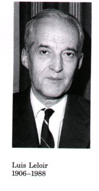 |
In animals and some microorganisms, excess glucose available from carbohydrates in the diet or from gluconeogenesis is stored as glycogen. Glycogen synthesis occurs in virtually all animal tissues but is especially prominent in the liver and skeletal muscles. In the liver, glycogen serves as a reservoir of glucose, readily converted into blood glucose for distribution to other tissues, whereas in muscle, glycogen is broken down via glycolysis to provide ATP energy for muscle contraction. The starting point for synthesis of glycogen is glucose-6-phosphate. This can be derived from free glucose by the hexokinase (in liver; glucokinase in muscle) reaction:
D-Glucose + ATP  D-glucose-6-phosphate +
ADP
D-glucose-6-phosphate +
ADP
However, much of the glucose ingested during a meal takes a more roundabout path to glycogen. It is first taken up by erythrocytes in the bloodstream and converted to lactate glycolytically; the lactate is then taken up by the liver and converted to glucose-6-phosphate by gluconeogenesis.
To initiate glycogen synthesis, the glucose-6-phosphate is reversibly converted into glucose-1-phosphate by phosphoglucomutase:
Glucose-6-phosphate  glucose-1-phosphate
glucose-1-phosphate
The formation of UDP-glucose by the action of UDP-glucose pyrophosphorylase is a key reaction in glycogen biosynthesis:
Glucose-1-phosphate + UTP UDP-glucose +
PPi
This reaction proceeds in the direction of UDP-glucose formation because pyrophosphate is rapidly hydrolyzed to orthophosphate by inorganic pyrophosphatase (ΔG°' = -25 kJ/mol) (Fig. 19-11).
UDP-glucose, as we have already noted (see Fig. 14-13), is an intermediate in the conversion of galactose into glucose. UDP-glucose is the immediate donor of glucose residues in the enzymatic formation of glycogen by the action of glycogen synthase, which promotes the transfer of the glucosyl residue from UDP-glucose to a nonreducing end of the branched glycogen molecule (Fig. 19-12). The overall equilibrium of the path from glucose-6-phosphate to lengthened glycogen greatly favors synthesis of glycogen. Glycogen synthase requires as a primer an (α1→4) polyglucose chain or branch having at least four glucose residues.
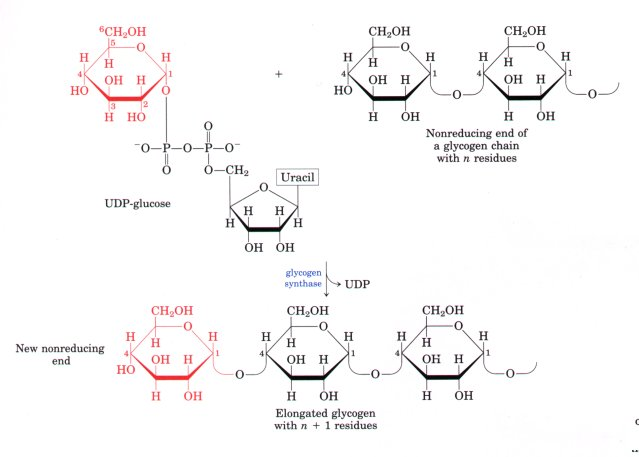
Figure 19-12 Elongation of a glycogen chain by glycogen synthase. The glucosyl residue of UDPglucose is transferred to the nonreducing end of a glycogen branch (see Fig. 11-15) to make a new (αl→4) linkage.
Glycogen synthase cannot make the (α1→6) bonds found at the branch points of glycogen (see Fig. 11-15); instead, these are formed by a glycogen-branching enzyme, amylo (1→4) to (1→6) transglycosylase or glycosyl-(4→6)-transferase. Glycosyl-(4→6)-transferase catalyzes transfer of a terminal fragment of six or seven glucosyl residues from the nonreducing end of a glycogen branch having at least eleven residues to the C-6 hydroxyl group of a glucose residue of the same or another glycogen chain at a more interior point, thus creating a new branch (Fig. 19-13). Further glucosyl residues may be added to the new branch by glycogen synthase. The biological effect of branching is to make the glycogen molecule more soluble and to increase the number of nonreducing ends, thus making the glycogen more reactive to both glycogen phosphorylase and glycogen synthase.
Figure 19-13 The glycogen-branching enzyme glycosyl-(4→6)-transferase (or amylo (1→4) to (1→6) transglycosylase) forms a new branch point during glycogen synthesis.
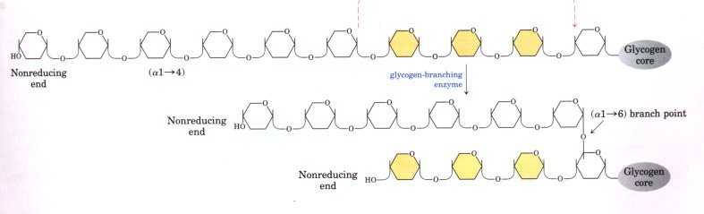
If glycogen synthase requires a primer,
how is a new glycogen molecule initiated? The answer lies
in an intriguing protein called glycogenin (Mr
37,284), which itself acts as the primer to which the
first glucose residue is attached and also as the
catalyst for synthesis of a nascent glycogen molecule
with up to eight glucose residues (Fig. 19-14). The first
step is the covalent attachment of a glucose residue to
Tyr194 of glycogenin, catalyzed by the protein's
glucosyltransferase activity (step l ). Glycogenin then
forms a tight l:l complex with glycogen synthase (step 2
), within which the next few steps occur. The glucan
chain is extended by the sequential addition of up to
seven more glucose residues (step 3). Each new residue
is derived from UDPglucose, and the reactions are
autocatalytic (mediated by the glucosyltransferase of
glycogenin). At this point, glycogen synthase takes over,
extending the glycogen chain and dissociating from
glycogenin (step 4) The combined action of glycogen
synthase and the branching enzyme (step 5 ) completes
the glycogen particle. Glycogenin remains buried within
the particle, covalently attached to one end.Glycogen Synthase and Glycogen Phosphorylase Are Reciprocally RegulatedEarlier we saw that the breakdown of glycogen is regulated by both covalent and allosteric modulation of glycogen phosphorylase (see Fig. 14-17). Phosphorylase a, the active form, which contains essential phosphorylated Ser residues, is dephosphorylated by phosphorylase a phosphatase to yield phosphorylase b, the relatively inactive form, which can be stimulated by AMP, its allosteric modulator. Phosphorylase b kinase can convert phosphorylase b back into the active phosphorylase a by phosphorylating the essential Ser residues. |
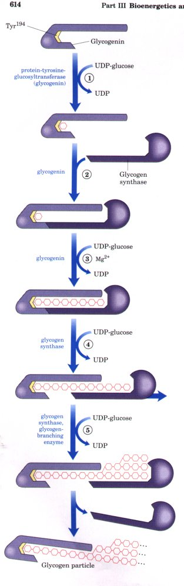 Figure 19-14 Initiating the synthesis of a glycogen particle with a protein primer glycogenin. Steps (1) through (5) are described in the text. Glycogenin is found within glycogen particles, still covalently attached to the reducing end of the molecule. |
Glycogen synthase also occurs in phosphorylated and dephosphorylated forms, but it is regulated in a reciprocal manner, opposite to that of glycogen phosphorylase (Fig. 19-15). Its active form, glycogen synthase a, is the dephosphorylated form. When it is phosphorylated at two Ser hydroxyl groups by a protein kinase, glycogen synthase a is converted into its less active form glycogen synthase b. The conversion of the less active glycogen synthase b back into the active form is promoted by phosphoprotein phosphatase, which removes the phosphate groups from the Ser residues. Glycogen phosphorylase and glycogen synthase are therefore reciprocally regulated by this phosphorylation-dephosphorylation cycle; when one is stimulated, the other is inhibited (Fig. 19-15). It appears that these two enzymes are never fully active simultaneously.
| The balance between glycogen synthesis and breakdown in liver is controlled by the hormones glucagon and insulin (Table 19-4). These hormones, by regulating the level of cAMP in their target tissues, determine the ratio of active to less active forms of glycogen phosphorylase and glycogen synthase. The hormones also regulate the concentration of fructose-2,6-bisphosphate and thereby the balance between gluconeogenesis and glycolysis. Epinephrine has effects similar to those of glucagon, but its target is primarily muscle whereas glucagon's primary action is on liver. The regulatory role of these hormones and the details of their action on target tissue will be considered further in Chapter 22. | 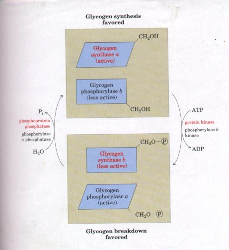 Figure 19-15 Reciprocal regulation of glycogen synthase and glycogen phosphorylase by phosphorylation and dephosphorylation. In both enzymes the site of phosphorylation is a Ser residue (represented here by -CH2OH). The enzymes of glycogen synthesis are shown in red; those of glycogen breakdown in black. |
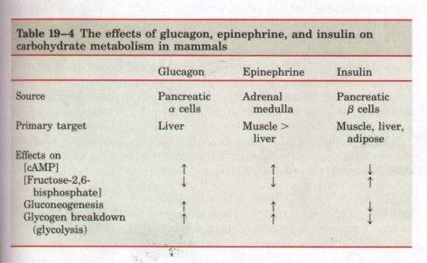
Starch, like glycogen, is a high molecular weight polymer of D-glucose in (α1→4) linkage (see Fig. 11-15). Starch synthesis occurs in chloroplasts. The mechanism of hexose polymerization in starch synthesis is essentially similar to that in glycogen synthesis. An activated nucleotide sugar (ADP-glucose in this case) is formed by condensation of glucose-1-phosphate with ATP. Starch synthase then transfers glucose residues from ADP-glucose to the nonreducing end of preexisting starch molecules that act as primers (Fig. 19-16). The reaction involves displacement of the ADP of ADP-glucose by the attacking 4'hydroxyl of the primer, forming the characteristic (α1→4) linkages of starch. The starch fraction called amylose is unbranched, but amylopectin has numerous (α1→6)-linked branches like those of glycogen, from which it differs in molecular weight and extent of branching (Chapter 11). Chloroplasts contain a branching enzyme similar to that involved in glycogen synthesis (Fig. 19-13); it introduces the (α1→6) branches of amylopectin.
With the hydrolysis by inorganic pyrophosphatase of PPi produced during ADP-glucose synthesis, the overall reaction for starch formation from glucose-1-phosphate is
Starchn + glucose-1-phosphate + ATP
starchn+1 + ADP + 2Pi
ΔG°' = -50 kJ/mol
Starch synthesis is regulated at the level of ADP-glucose formation (Fig. 19-16), as discussed later in this chapter.
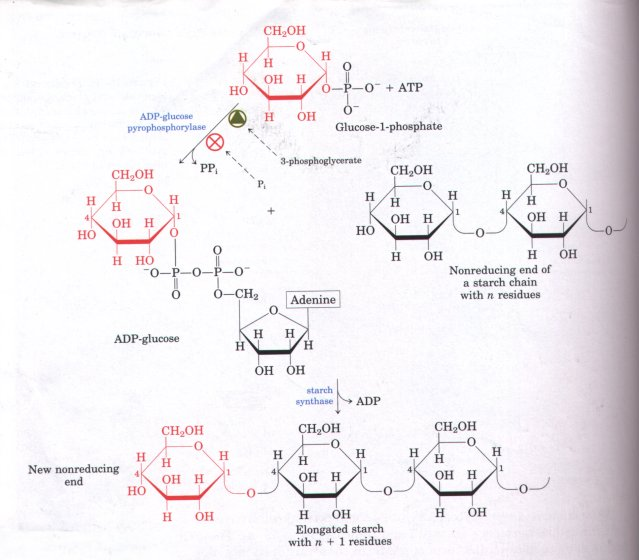
Figure 19-16 Starch synthesis proceeds by a mechanism analogous to that for glycogen synthesis (see Fig. 19-12), except that the activated substrate is ADP-glucose. Glucose is transferred to the nonreducing end of an existing starch molecule, in (α1→4) linkage. ADP-glucose pyrophosphorylase is a regulatory enzyme (p. 633).
Most of the triose phosphates generated by CO2 fixation in plants are converted into sucrose (Fig. 19-17) or starch. Sucrose may have been selected during evolution as the transport form of carbon because its unusual linkage, which joins the anomeric C-1 of glucose and the anomeric C-2 of fructose, is not hydrolyzed by amylases or other common carbohydrate-cleaving enzymes. Sucrose is synthesized in the cytosol, beginning with dihydroxyacetone phosphate and glyceraldehyde-3-phosphate exported from the chloroplast. After condensation to fructose-1,6-bisphosphate (by aldolase), hydrolysis by fructose-1,6-bisphosphatase yields fructose-6-phosphate. Sucrose-6-phosphate synthase catalyzes the reaction of fructose-6-phosphate with UDPglucose to form sucrose-6-phosphate. Finally, sucrose-6-phosphate phosphatase removes the phosphate group, making sucrose available for export from the cell to other tissues of the plant. Sucrose synthesis is regulated and closely coordinated with starch synthesis, as we shall see. |
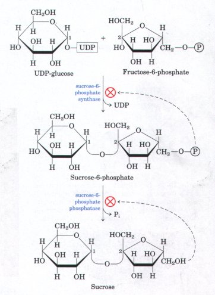 Figure 19-17 Sucrose is synthesized from acti- vated glucose (UDP-glucose) and fructose-6-phosphate. The sucrose-6-phosphate formed in the first step accumulates when the final product, sucrose, inhibits the enzyme sucrose-6-phosphate phosphatase. The first step is also inhibited by its product, sucrose-6-phosphate. UDP-glucose and fructose-6- phosphate are synthesized from triose phosphates in the cytosol of plant cells by pathways identical to those shown in Fig. 19-11 and 19-22. |
The synthesis of lactose in lactating mammary gland occurs by a mechanism similar to that for glycogen synthesis. However, the regulation of lactose synthesis is unusual. Most vertebrate tissues contain the enzyme galactosyl transferase (Fig. 19-18a), which promotes the transfer of an activated galactose residue in UDP-galactose to the monosaccharide N-acetylglucosamine:
UDP-D-galactose + N-acetyl-D-glucosamine
D-galactosyl-N-acetyl-D-glucosamine + UDP
This reaction has no role in lactose synthesis; it is a step in the biosynthesis of the carbohydrate portion of galactose-containing glycoproteins in animal tissues.
In the lactating mammary gland, however, this same enzyme participates in lactose synthesis (Fig. 19-18b). Galactosyl transferase, which is very active with N-acetylglucosamine but only feebly active with glucose as galactosyl acceptor, is present in most tissues, including the mammary gland, as noted above. Immediately after a female gives birth, the specificity of galactosyl transferase in the mammary gland changes: it now transfers the galactosyl group of UDP-galactose to glucose at a very high rate, thus making lactose:
UDP-D-galactose + D-glucose D-lactose +
UDP
This "new" enzyme is called lactose synthase (Fig. 19-18b).
The change in speciiicity of galactosyl transferase is caused by the synthesis of α-lactalbumin (Mr 13,500), a milk protein, whose function was long unknown. α-Lactalbumin has been found to be a specificity-modifying subunit; its synthesis in the mammary gland, which is regulated by the hormones promoting lactation, leads to the formation of an α-lactalbumin-galactosyl transferase complex, that is, lactose synthase.
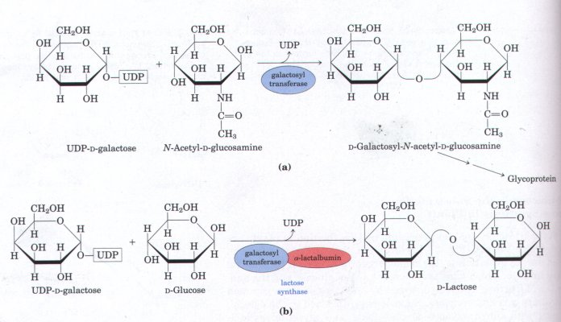
Figure 19-18 Two distinct reactions are catalyzed by galactosyl transferase, depending on whether the protein α-lactalbumin, produced only in lactating mammary gland, is present. (a) The reaction in nonlactating tissues; (b) the reaction in lactating mammary gland.